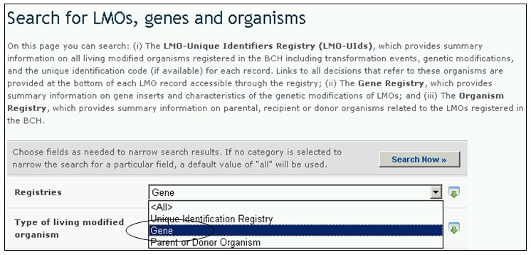

El Registro de genes contiene información sobre genes insertados y características de la modificación en OVM. Estos registros proporcionan la siguiente información:
1. Nombre del gen;
2. Rasgos introducidos o modificados;
3. Producto del Genes;
4. Función del gen;
5. Información sobre el organismo donante (incluyendo el lugar de recolección o adquisición del organismo receptor o los organismos parentales);
6. Información adicional.
Por convención, los nombre de los genes se escriben en itálica y las proteínas que derivan de los genes usan el mismo nombre pero con la letra inicial en mayúscula y formato de letra normal. Por ejemplo, el gen cry1A(b) produce la proteína Cry1A(b).
